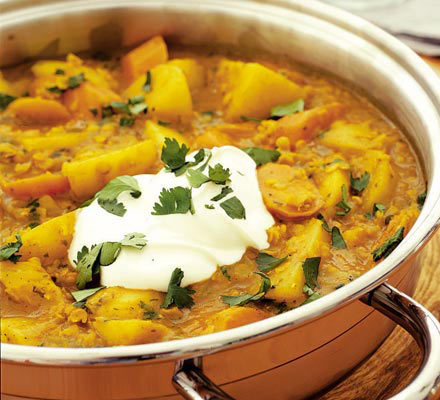

<div style="margin-top: 100px" class="container" ng-app="recipal.recipeCtrl" ng-ctrl="recipeCtrl">
	<div class="recipe-container">
		<div class="">
			
		</div>
		<div class="card effect__click" ng-class="{'flipped':isFlipped}" ng-click="flipCard()">

			<div class="front">
				<h1>Food name</h1>
				
			</div>
			<div class="back">
				<h1 style="text-align:center">Food name</h1>
				<div class="ingredients">
					<h4>Ingredients:</h4>
					<ul>
						<li>3 1/2 cups white whole wheat flour</li>
						<li>2 1/2 teaspoons ground cinnamon</li>
						<li>2 teaspoons baking powder</li>
						<li>1 teaspoon kosher salt</li>
					</ul>
				</div>
				<div class="directions">
					<h4>Directions:</h4>
				</div>
			</div>
		</div>
	</div>
</div>